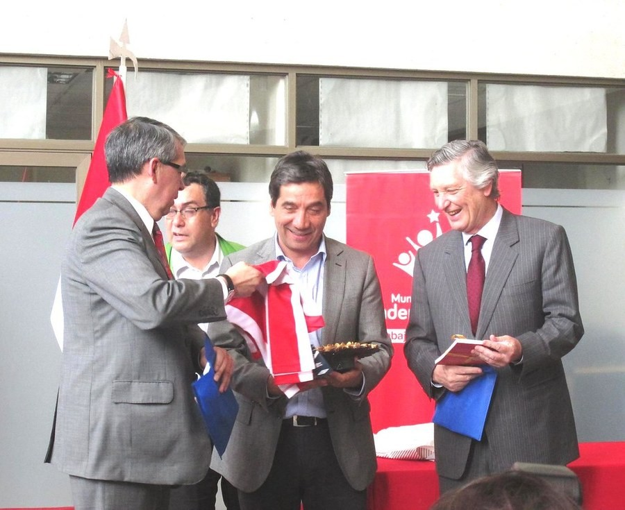

IoU 0.604 · 3454 ms
เขียวเส้นทึบ = เฉลย · ส้มเส้นประ = โมเดล · ภาพที่ไม่มีกรอบสีเขียวคือกรณีที่สินค้าเป้าหมายไม่ปรากฏ
IoU 0.604 · 3454 ms

IoU 0.900 · 5106 ms

IoU 0.880 · 3884 ms
IoU 0.000 · 3947 ms

IoU 0.794 · 3939 ms
ภาพต้นฉบับ · Ministerio de Relaciones Exteriores del Perú (Cancillería del Perú) · CC BY-SA 2.0 · ปรับขนาดและซ้อนกรอบเพื่อวัดตำแหน่ง
IoU 0.410 · 4452 ms
ภาพต้นฉบับ · Ministerio de Relaciones Exteriores del Perú (Cancillería del Perú) · CC BY-SA 2.0 · ปรับขนาดและซ้อนกรอบเพื่อวัดตำแหน่ง
IoU 0.709 · 2784 ms

IoU 0.000 · 1891 ms

เว้นกรอบถูกต้อง · 2334 ms
Steve Jobs Headshot 2010.JPG · Matthew Yohe at en.wikipedia · CC BY-SA 3.0 · ปรับขนาดและซ้อนกรอบเพื่อวัดตำแหน่งเว้นกรอบถูกต้อง · 1387 ms

เว้นกรอบถูกต้อง · 1894 ms

เว้นกรอบถูกต้อง · 2376 ms
ภาพสินค้าและฉากจำลองดัดแปลงจาก DummyJSON มีการปรับขนาดและซ้อนกรอบเปรียบเทียบ